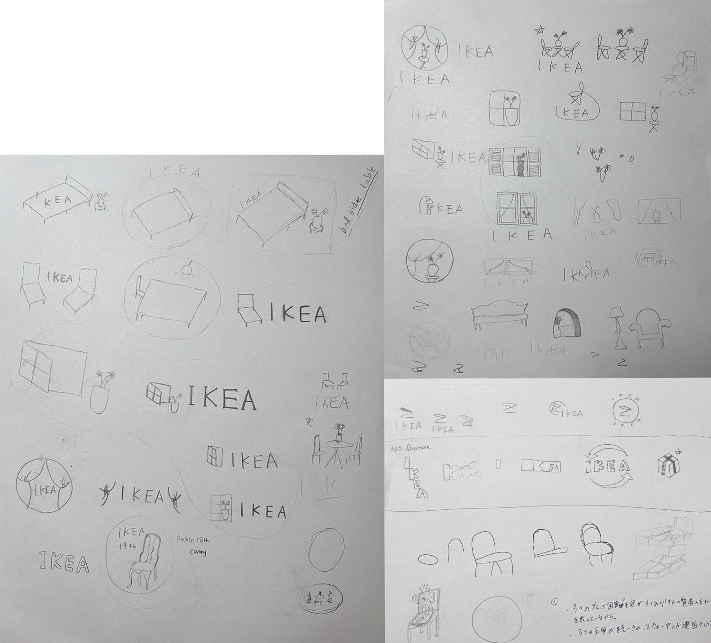
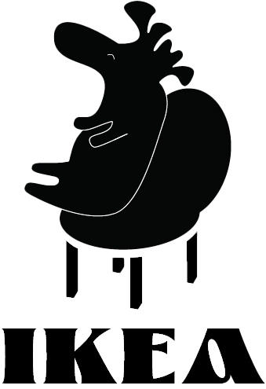
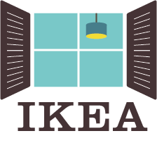

Client: School Project
Project Type: Logo Redesign
Compentencies: Illustration, Iconography
Softwar: Illustrator
Overview
IKEA has expanded globally brand which is known for its modernist furniture designs, affordable price a global furniture and home goods retailer. The founder is Ingvar Kamprad and he started this business in 1943 in Sweden.
Sketches


Refine Concepts
Challenge
The challenge in this project was to broaden my ideas. I tended to be influenced by existing logos. Also, at first, the design was biased towards flowers.
Solution
To expand on my ideas, I gathered a lot of information, such as where IKEA originated and how the company was founded, wrote it down on paper, and then put the pieces of my idea together in a picture.
option 1:
Tea Party
IKEA is a global home furnishing brand that provides affordable prices, great design, and comfort to people all over the world. This design features two chairs facing each other, creating a warm feeling.
option 2:
Swedish houses are known for their use of natural materials, light colors, and large window. In Sweden, where winter is covered in snow and ice, wooden sashes are common. Inspired by IKEA's vision "To create a better everyday life for the many people.", the sashes give the impression of inviting you into a warm home.

option 3:
The moose, a famous animal that is abundant in Sweden, is known as the king of the forest and is highly respected. We added a little humor by showing this moose lying down and relaxing on an IKEA chair.
The Final
For my final logo, I chose to go with swedish window. it's a simple and charming way to represent the cozy, functional, and affordable lifestyle that the IKEA brand embodies. The open window and the dangling light fixture capture the core of IKEA's vision: "To create a better everyday life for the many people."
